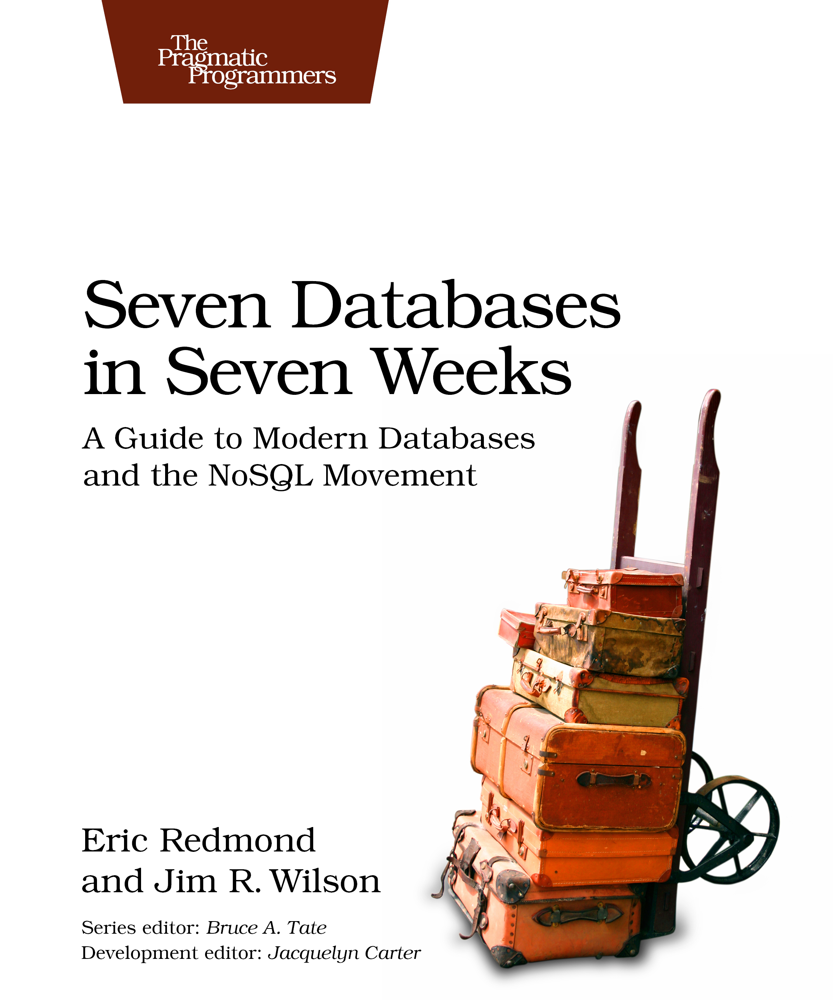
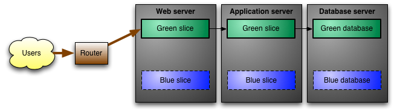

Microservices
Hot or Not?
Wojciech Gawroński, 2014 ©
License: CC BY-ND 3.0 PL
Introduce Concept and Definition.
Present Sample Case Studies.
Bust some hype about the power of this approach.
Bust some negatives about the problems with it.
In other words: some doze of healthy and constructive critique about that topic.
Agenda
Definitions
Details
Challenges
Nature
Science
Honeycomb, Wheatear ...
Almost everything in nature is composed from smaller parts.
Even on the physical level, not visible without very supersensitive.
Industry
Gears inside machine.
Smaller parts cooperate better, can be interchanged, replaced, repaired.
'Lots of moving parts' as a disadvantage.
Friction reduces the performance.
IT
In IT we should learn from the best examples.
But sometimes even if we would like to be the best, we did this.
The road to hell is paved with good intentions.
Etymology
We know how world is constructed, we are seeing the analogies.
Now, lets focus exactly on the word Microservice .
First usage of term "microservice" is attached to the workshops near Venice in 2011.
Than James Lewis presents "The Microservices - Java, The Unix Way" at 33rd Degree in Kraków.
After that the most important and influential person oriented around this topic is Adrian Cockroft.
Definition
It is not that simple
[...] an approach to developing a single application as a suite of small services, each running in its own process and communicating with lightweight mechanisms [...]
But citing exact definition is almost impossible.
Gazillion of definitions.
Each one uses different scale, metric, way of comparison.
Almost everyone is defining it in his own unique way.
Even this one is very technical and suggests actual solution.
Definition
Who? When? What? Where?
Smart, isolated and self-sufficient endpoints and dumb pipes.
Different definition can be built around Who? When? What? Where?
Martin Fowler is an author of that quote.
It is about the intent, responsibilities. Not about lines and size.
What is sometimes even more important (and we see it after a while), it is a definition in terms of amount of work.
Who is using ESB or other enterprise service bus ?
ESB and other 'intelligent' software are an anti-pattern here.
I'm not saying that ESB are bad (yes they are, but it is not a topic here) but it is not that type of architecture.
Evolution
The main factor that driving change, the main theme of all changes is EVOLUTION.
Have you deployed a 200 MB EAR file, which after all broken everything?
Have you deal with that "one NullPointerException that destroyed the release"?
Each of these companies started from the monolithic approach.
A single monolithic Perl + C++ (CGI anyone?) or Java applications.
BTW.: monolithic came from UNIX philosophy as a opposite technology to described one.
They have evolved to the more scalable, decoupled architectures because they have to.
Dropping single archive on production and hoping that everything will go okay is naive.
A micro-service is a small executable running on a server and responds to asynchronous messages.
Clean Micro-service Architecture, Uncle Bob
[...] is a discrete, isolated, and named piece of logic [...]
Actor Model, Victor Klang
[...] inside communicating over some number of ports with things on the outside.
Hexagonal Architecture, Alistair Cockburn
Objects communicate by sending and receiving messages.
OOP, Dr Alan Kay
Actor Model, UNIX philosophy, proper DDD...
Well understood and well done OOP is a microservice -like architecture.
More samples? Erlang (25 years old language with supervision hierarchies).
More samples? Smalltalk (method invocation is a message passing).
More samples? Multiple hexagons (Hexagonal Architecture).
More samples? Microkernel architecture.
Digression: I am always amazed how people remembered everything about encapsulation and inheritance and dropped out message passing.
Samples
JBoss
Erlang
Node.js
Symfony2
UNIX environment
JBoss - Monolithic.
Erlang - Actor Model.
Node.js - Multiple Processes.
Symfony2 - Decomposable Internal Architecture (nice framework).
UNIX tools and environment - UNIX philosophy.
Big Ball of Mud
[...] might be thought of as an anti-pattern. [...] However, its undeniable popularity leads to the inexorable conclusion that it is a pattern in its own right.
Big Ball of Mud
Make it work, Make it right, then make it fast.
Question: Who read "Big Ball of Mud" paper?
Who did not read it - go read it. Now. After the meeting.
It is not a purely pejorative statement.
We should strive the approach "make it work - make it right".
First we tackle the essential complexity of the problem and iteratively improve our solution.
It is a big ball of mud, collected from good, thoughtful and properly designed elements.
Hype
If you can't build a monolith, what makes you think microservices are the answer?
Distributed big balls of mud
However, when considering microservice like architectures, it's really important to not be attracted to the hype on this one as the challenges and costs are as real as the benefits.
Microservices - not a free lunch!
Like every new technology, there is a huge phase of hype on microservices.
Mostly non-objective, dangerous and misunderstood approach.
Also it is connected with polyglot-like movements.
Polyglot persistence, polyglot programming - everything is for people.
When misused, it is easy to make mess - too many technologies, too many options.
More in challenges chapter.
Deletability
Greg Young - The art of destroying software
From all properties of your architecture it should be the most important one.
It enables and drives the flexibility.
It manages and keeps the technical debt on the sane level.
How to optimize your development speed and do not spent so much time of reFUCKtoring?
It is not a replacement for TDD, BDD or tests.
It is a tool, a metric which helps you design and organize your code properly.
"If one of your parts of the system is more than a week rewrite it is a sign, that this is a dangerous side of your code and properly something went wrong here."
Minimal Viable Architecture
Iteratively, step by step we are coming to the concept of minimal viable architecture.
The most pragmatic approach to the software architecture, very compatible with agile.
However it is also compatible with microservices architecture.
We have talked about deletability, small units, single responsibilities.
"Perfection is Achieved Not When There Is Nothing More to Add, But When There Is Nothing Left to Take Away"
Challenges
Hype and popularity leads to the misunderstanding.
As we see, topic is definitely hot but definitely not new.
And hot topics are connected with challenges.
Benefits - small parts, natural responsibilities, discipline.
Benefits - better tools, connected with the actual problem.
Benefits - easy, simple, scalable.
But to receive all this greatness we need to focus on challenges and solve them properly.
Operations
Adrian Cockcroft on Microservices and DevOps
Backups
Deployment
Migrations
Security
Monitoring
Updates
Maintenance
Installation
Do you want multiple storages? Think about backups and migrations.
Many different technologies? Think about monitoring, deployment, updates and security.
Updating packages, especially on Linux is difficult.
DevOps Culture to the Rescue!
Operations
Incremental approach to build an automated, reproducible infrastructure.
Hiring a DevOps Engineer will look you would like to employee a Scrum.
DevOps culture is a good answer for almost all problems from the previous slide.
There are more specific techniques related with e.g. backups or migrations.
Blue-Green Deployment it is a solution to handle multiple versions of the one system.
Migrations on the fly inside the program logic.
Event Sourcing and rebuilding the state of the program from the history is a solution for the not synchronized backups procedures.
Service Discovery
Sharing Resources
Clusters
Configuration
Orchestration
URI and Paths
We want to scale and dynamically resize our clusters, but our configuration and connections are not scaling with it.
There are tools which will help us to do it.
The whole approach is to dynamically discover and register capabilities of the clusters.
We need to manage that in order to work with scalable and dynamic environments.
Storage
Polyglot Persistence

It is more than a notice, than an actual challenge - you can complicate pretty nice your architecture by putting too much storage mechanisms into your system.
Small services uses smaller databases, sometimes more appropriate to the type of the work which needs to be done inside this service.
Obviously using one database over is a pretty deliberate choice. But be sure that you are at least choosing proper database, suited to the requirements. And think about fall-back and back-up procedures because using more than one storage complicates backups pretty badly.
It is quite nice book actually, which will help you choose the best storage suited to your needs.
And one more: using more than one storage enforces on you to treat at least one as an ultimate source of truth and rest as a different view-caches. Otherwise it will be painful regarding returning to the consistent point.
Integration through Storage
When it comes to the storage, the very tricky part is an integration between services.
Integration through the storage is the most dangerous way of integrating two parts.
You are coupling two pieces of architecture on the data structure (and sometimes even more - coupling by the internal details) level. This is the one of the most painful type of coupling to remove in future.
But this is not a clear anti-pattern - remember that in some cases, which are deeply understood this is a proper way to handle stuff if you would like to overcome the performance problems. But you should have very strong arguments to do that, and all of the others ways are already failed.
Fuzzy Boundaries
This is the most dangerous part e.g. in DDD. How to split bounded contexts?
Smaller modules / components tease to put more responsibilities inside.
Putting more and more into one thing blurs the boundaries and responsibilities.
Contracts
Transport
API's written in the conventional manner are not sufficient to understand the operation of programs.
Making reliable distributed systems in the presence of software errors
When multiple components are talking between, we need to be fail proof, rigid and strict as much as it is possible.
Ways how to talk between systems are crucial if someone is using your system as an API, or you have more than one service which are communicating between.
Also chosen transport mechanism is one of the important aspects of the communication. For example, HTTP and REST are stateless, UDP does not guarantee the delivery or order of the packets and so on.
I deliberately did not use a word API here, because the idea of Protocols is definitely more close to me. I really like the approach of defining an API calls and sequences which are allowed, especially when it comes to the operations which makes sense when they are invoked only in certain order.
Simple example: you should read bytes from a file only after you have open it earlier. Similar constraint applies to the reading and closed stream.
I definitely recommend whole thesis, even if you are prejudiced to the Erlang.
And definitely very short 9th chapter about this topic.
Tests
Development
Choosing a separate technology connected with the problem obviously has drawbacks.
Accidental Complexity will increase with each of added technologies.
Simple example - testing and keeping the consistency between them.
Another one - Coding Standards.
Sometimes we are so amused by the cloud and abilities of PaaS that we forget that we have to develop on our local machines. Tools like docker , vagrant are helping us, but what with the other things like S3, SQS and other services provided by your favorite cloud provider.
Tests
Operations

One of the challenges with automating deployment is the cut-over itself, taking software from the final stage of testing to live production.
Blue-Green Deployment
Blue-Green deployments and Testing Groups - it is like A/B testing but with features.
Flow control (20% of traffic through new solution).
Simpler: Test Users on production (at least some of data will go through him).
Simple: Enabling feature toggles per user (easily testable new features in isolated group).
Robustness
To guard against failure of an entire computer we need two computers.
Making reliable distributed systems in the presence of software errors
This is simple and beautiful quote, again from already mentioned PhD thesis.
We need to be sure that in our architecture we took all necessary steps to provide components robustness especially in the dangerous parts of the system.
Duplication of services sometimes is not enough, there are situations where whole clusters fails. And what then?
Scale
For a small operation this may be true, but when you're doing a million operations a second then a one-in-a-million failure scenario will happen every second.
Errors in Database Systems, Eventual Consistency, and the CAP Theorem
We talked about the evolution and almost each of the distributed system is created in the evolution process.
It is definitely easier to scale the multiple things than scaling one monolith. But sometimes it is also a valid answer.
Scale introduces edge cases - e.g. different problems with TCP stack settings, cascade failures.
Your cloud provider should be your advantage, it should help you, not be a constraint or a problem.
Summary
Microservices are not a free lunch.
Complexity management is crucial.
Choose your tools responsibly.
DevOps to the rescue.
It definitely gives you multiple benefits but not for free.
Accidental complexity can be deadly for your projects.
Death-By-Too-Many-Technologies
Choose tools for the actual reason and with solid arguments.
Incorporating DevOps culture and continuous improvement will definitely help you build this type of architectures.


{kind=link}
{kind=link}
{kind=link}
{kind=link}